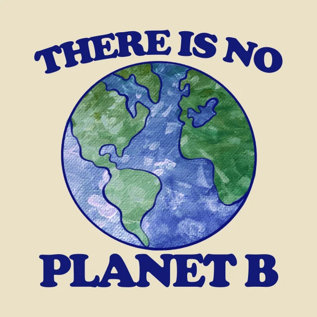

Climate change is a very real and pressing world affair that we can no longer turn a blind eye to without damming consequence.
This website is built in favour of change and the actions that we can take as individuals to have the greatest impact.
Climate change refers to long-term shifts in temperatures and weather patterns. Such shifts can be natural, due to changes in the sun’s activity or large volcanic eruptions. But since the 1800s, human activities have been the main driver of climate change, primarily due to the burning of fossil fuels like coal, oil and gas. Burning fossil fuels generates greenhouse gas emissions that act like a blanket wrapped around the Earth, trapping the sun’s heat and raising temperatures. The main greenhouse gases that are causing climate change include carbon dioxide and methane. These come from using gasoline for driving a car or coal for heating a building, for example. Clearing land and cutting down forests can also release carbon dioxide. Agriculture, oil and gas operations are major sources of methane emissions. Energy, industry, transport, buildings, agriculture and land use are among the main sectors causing greenhouse gases.
Source: United Nations